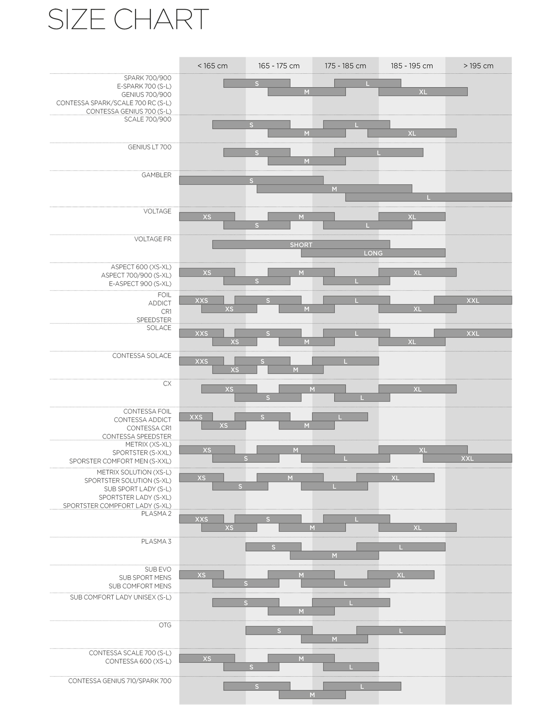
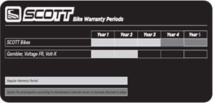

FAQ
자주 문의하시는 사항에 대한 질문과 답변입니다.
고객님! 원하는 정보를 찾지 못하셨나요?
1:1문의에서 문의하세요!
1:1문의하기
-
구매 및 배송
구매 및 배송 대리점마다 판매 가격이 다른 이유는 무엇인가요?
판매 가격은 공정거래법상 판매자의 독립적 의지로 결정하게 되어 있습니다.
따라서 대리점마다 판매가격은 상이합니다.
동일한 모델이라면 조립기술 및 AS 능력을 잘 판단하셔서 구매하시는 것이 좋습니다. -
홈페이지
아이디/비밀번호를 잃어버렸습니다.
스캇노스아시아 로그인 페이지에서 ID/PW 찾기를 해주시기 바랍니다.
이후에도 아이디/비밀번호를 찾지 못하신 경우 02-918-6606로 문의해주시길 바랍니다. -
제품문의
구매 직후 제품에 문제가 생겼습니다. 환불 또는 교환이 가능한가요?
환불, 교환을 원하실 경우 구입하신 대리점으로 문의하여 주시기 바랍니다.
-
제품문의
제품 입고 일정은 어디서 알 수 있나요?
일주일 이내 입고 제품은 첼로 홈페이지 공지사항에서 확인하실 수 있습니다.
단, 외부적 요인으로 부득이하게 변경될 수 있는 제품도 있음을 참조해 주시기 바랍니다.
일주일 이내 입고 예정 제품이 아닌 경우 본사 정책상 정확한 일정을 알려드릴 수 없습니다.
가까운 대리점에 문의하시기 바랍니다. -
기타문의
신장별 자전거 사이즈가 어떻게 되나요?

-
A/S
품질보증기간이 얼마나 되나요?
 1. SCOTT사의 프레임과 스윙암,포크를 포함하는 완성자전거를 구입한 경우 물질적 혹은 기능상의 결함이 있을시 최장 5년의 보증기간을 보장합니다. 5년 워런티 진행시 필요 조건은-최초 구매자 , 구입영수증 첨부 * 단 로드 프레임의 포크 ,갬블러,볼티지FR,볼트X모델의 경우 보증기간은 2년으로 한정됩니다.
2. 보증수리의 경우 최초의 소비자만이 해당됩니다.(2차 구매자 보증사항 제외)
① 1차 구매자로 제한되는 이유는 사용자의 라이딩 성향이나 코스에 따라 자전거의 가해지는 충격과 량이 다릅니다. 최초 구매자만 사용과 다수의 사용자가 사용한 프레임에 가해지는 피로도는 다릅니다.
② 2차 3차 구매자의 경우 최초 제품의 대한 유통경로의 확인이 어렵습니다.
③ 최초 구매자의 경우 반듯이 구매 영수증을 보관 하십시오.영수증의 분실시 실 워런티 기간은 당사의 매출일 기준으로 적용됩니다. -
구매 및 배송
완성차 및 용부품의 교환 및 환불 규정은 어떻게 되나요?
완성차 및 용부품의 교환, 또는 환불은 거래가 이루어진 매장에서만 가능합니다.
구입한 구입처로 문의하여 주시기 바랍니다. -
구매 및 배송
본사에서 완성차 및 용부품 구입이 가능한가요?
자사의 정책상, 소비자 대상의 직접판매는 어렵습니다. 가까운 스캇 취급점에서 구입이 가능합니다.